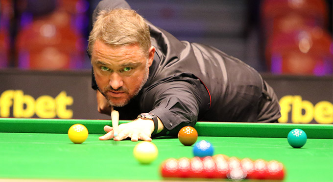

Benjámin vagyok,
és szakterületeim:
Hobbi
Darts
Életem legfontosabb részét képezi. Élőben, illetve tévében nézem a profikat. A kedvencem Dimi. 😹

Snooker
Heti 2-szer snookerezek. Kedvenceim: Stephen Hendry, Kyren Wilson, Luca Brecel, Révész Bulcsú
Utazás
Imádok új helyeket megismerni. Eddig csakis Európát fedeztem fel. Grúzia, Dél-Korea lenne az álom úti cél.

Filmek
Elsősorban drámákat, illetve fekete komédiát nézek. Nemcsak mainstream, hanem ritka filmeket is megnézek. A kedvenc filmjeim: Adelmanék titka, Szegény párák
Zenehallgatás
Mindenevőnek mondom magam. A rocktól a hip-hopig, a poptól az alterig. Néha egy kis techno is kell!